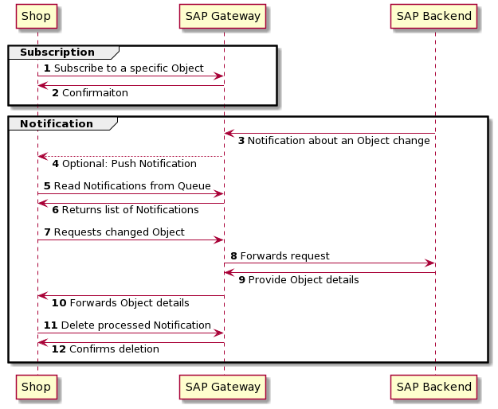

Gregor Wolf
OData Dienste
mit SAP
REST
- Representational State Transfer
- Client-Server
- Zustandslos
- Caching
- Mehrschichtige Systeme
- Einheitliche Schnittstelle
Einheitliche Schnittstelle
- Adressierbarkeit von Ressourcen
- Repräsentationen von Ressourcen
- Selbstbeschreibende Nachrichten
-
Verknüpfung von Entitäten durch Links
„Hypermedia as the Engine of Application State“ (HATEOAS)
OData - Open Data Protocol
OData
- V4 ist seit März 2014 ein OASIS Standard
- Baut auf Standards wie REST, XML und JSON auf
- Stellt einheitliche Schnittstellen für den Zugriff auf Datenquellen bereit (Query + CRUD + Actions)
- Ermöglicht die Integration in Anwendungen basierend auf Internettechnologien
- Verfügbar in SAP seit der Einführung (Mai 2011) des SAP NetWeaver Gateway (heute SAP Gateway)
SAP Gateway
- SAP Gateway ist ab 7.40 Teil von SAP NetWeaver
- Erlaubt die Verbindung von Browsern, Geräten und Plattformen mit SAP Systemen
- Implementiert das OData Protokoll
(v2, teilweise v4) - Kann Eigenständig oder auch zusammen mit z.B. SAP ERP als Add-on betrieben werden (embedded)
SAP Gateway - Implementierung
- ABAP OO
- Core Data Services (CDS, ab 7.50, AnyDB)
SAP Gateway - Architektur

Schritte zum OData Service mit SAP Gateway
-
SAP Gateway aktivieren in STC01
(Tasklist SAP_GATEWAY_BASIC_CONFIG) -
Schnittstellendefinition in SEGW
(Entities, Entity Sets, Function Import) - Implementierung der
Model- und Data-Provider Klassen - Aktivierung des Services in /IWFND/MAINT_SERVICE
Push und Pull
mit dem Subscription und Notification Flow

Vergleich mit bestehenden Technologien
-
iDoc
Massendaten, asynchrone Verarbeitung -
RFC
SAP zu SAP Verbindungen -
SOAP
Wissen für ABAP und PI/PO erforderlich
Kann nicht einfach im Browser genutzt werden -
OData
Einfach verständliche HTTP(S) API,
synchrone Verarbeitung
Vorteile von OData 1/2
- SAP setzt in S/4HANA darauf
- Verständliche Schnittstelle für Entwickler
- Wenn JSON verwendet wird auch lesbare Daten
- Verknüpfung mit anderen modernen SAP Technologien (SAPUI5, Fiori) möglich
Vorteile von OData 2/2
- Push und Pull (Queue) von Backend Events möglich
- Zugriff auf SAP Daten, in nicht SAP typischen Programmiersprachen möglich
- Vielfältige Verwendungsmöglichkeiten der bereitgestellten Daten
Nachteile von OData
- Backend muss erreichbar sein
- Nur synchrone Verarbeitung